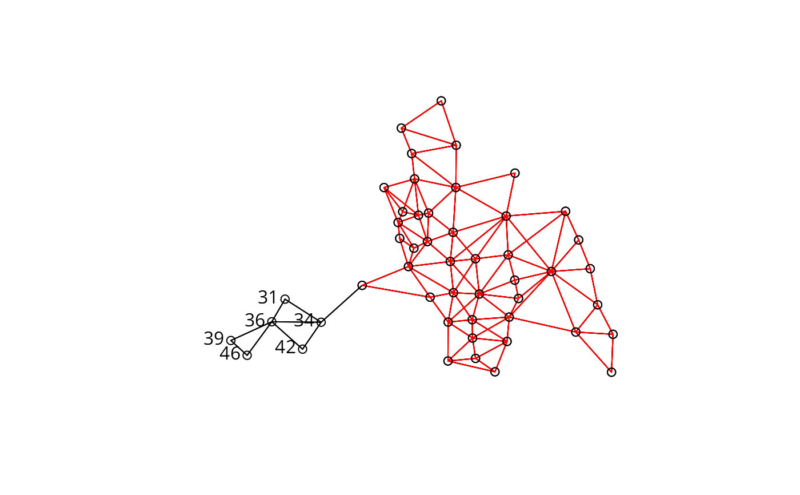

subset.nb.RdThe function subsets a neighbors list, retaining objects for which the subset argument vector is TRUE.
# S3 method for nb subset(x, subset, ...)
| x | an object of class |
|---|---|
| subset | logical expression |
| ... | generic function pass-through |
The function returns an object of class nb with a list of
integer vectors containing neighbour region number ids (compacted to
run from 1:number of regions in subset).
Roger Bivand Roger.Bivand@nhh.no
columbus <- st_read(system.file("shapes/columbus.shp", package="spData")[1], quiet=TRUE) col.gal.nb <- read.gal(system.file("weights/columbus.gal", package="spData")[1]) coords <- coordinates(as(columbus, "Spatial")) plot(col.gal.nb, coords)to.be.dropped <- c(31, 34, 36, 39, 42, 46) text(coords[to.be.dropped,1], coords[to.be.dropped,2], labels=to.be.dropped, pos=2, offset=0.3)sub.col.gal.nb <- subset(col.gal.nb, !(1:length(col.gal.nb) %in% to.be.dropped)) plot(sub.col.gal.nb, coords[-to.be.dropped,], col="red", add=TRUE)#> [1] 31 34 36 39 42 46